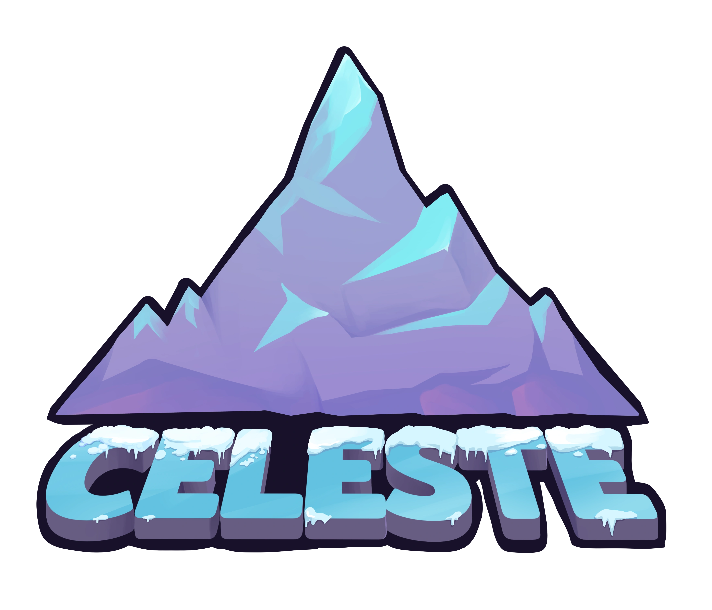

Celeste
Celeste é um jogo de plataforma 2D feito pela desenvolvedora canadense Extreme OK Games, mas tendo como idealizadora Maddy, da Maddy Makes Games. Celeste foi lançado dia 25 de janeiro de 2018. O jogo tem como protagonista Madeline, uma jovem mulher que por conta de problemas em sua vida, decide escalar uma montanha que é descoberta ser mágica.
Gameplay
O jogo apresenta uma movimentação rápida e precisa, porém, com grande fluidez, fazendo o jogo ser fácil de aprender, mas difícil de masterizar. Celeste possui uma progressão linear, tanto pelos capítulos como pela dificuldade, introduzindo novas mecânicas de forma gradual, então fazendo o jogador se acostumar mais facilmente com o jogo.
O jogo é dividido em 9 capítulos, além do prólogo e do epílogo.
Desenvolvedores:
Celeste foi originalmente desenvolvido em 4 dias como um jogo de Pico-8 para uma Game Jam. Esse jogo, após o lançamento do Celeste completo, é referenciado como Celeste Classic. O jogo original de Pico-8 foi desenvolvido por Maddy Thorson e Noel Berry.
Após o lançamento do jogo oficial em 2018 no nome da desenvolvedora Maddy Makes Games, Maddy e um grupo de amigos criaram a Extremely OK Games, que auxiliou em atualizações para os jogo da Maddy, além de um novo projeto que será lançado em 2024.